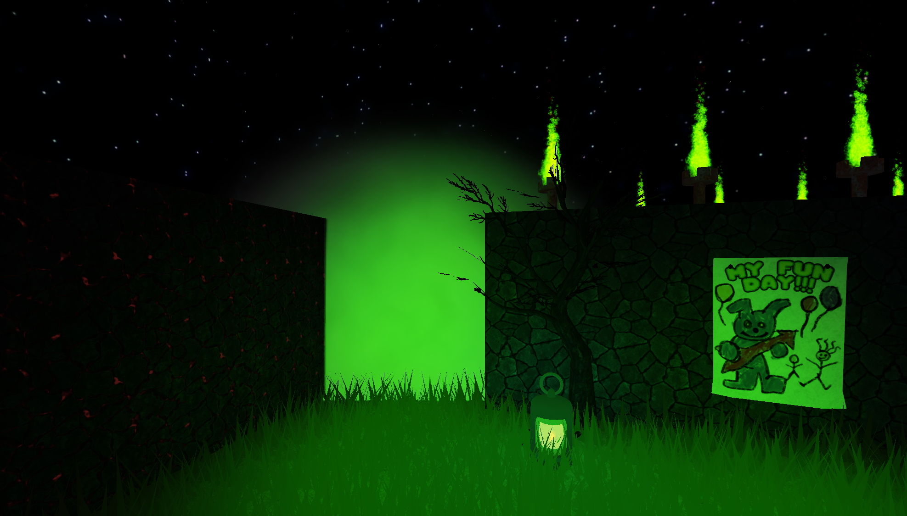

Завдання 5: Ілюзія та секретний прохід 🔥🚪
⏳ Дедлайн виконання: до наступного уроку.
Твоя задача — створити прихований шлях у лабіринті. Гравці повинні думати, що проходу немає або там небезпечно, але насправді це секретний вихід.
🛠 Що потрібно зробити:
- Знайди найкраще місце для перешкоди: Обери місце в лабіринті, де буде знаходитися твій секретний прохід.
-
Постав перешкоду: Створи блок (Part), який
повністю перекриває цей шлях. Додай до нього ефект
Fire(Вогонь) абоSmoke(Дим). Зроби ефект великим, щоб він виглядав загрозливо.


Як здати завдання:
Зроби два скріншоти або запиши коротке відео. На першому має бути видно твою перешкоду ззовні, на другому — що знаходиться за нею у секретній кімнаті. Відправ це у наш Telegram-чат.
Зроби два скріншоти або запиши коротке відео. На першому має бути видно твою перешкоду ззовні, на другому — що знаходиться за нею у секретній кімнаті. Відправ це у наш Telegram-чат.
🎮 Перевір себе: Properties Ефектів
Окрім будівництва, тобі потрібно відновити інструкцію розробника. Перетягни назви властивостей (Size, Color, Range тощо) у правильні місця в реченнях.
🧐
БУДЬ ТОЧНИМ!
У Roblox Studio кожна властивість відповідає за свій результат. Згадай, що робить Opacity, а що — Range!
У Roblox Studio кожна властивість відповідає за свій результат. Згадай, що робить Opacity, а що — Range!